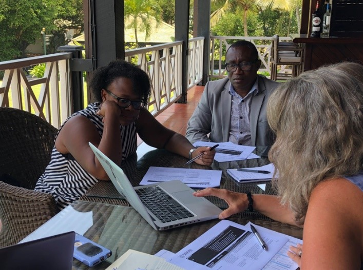
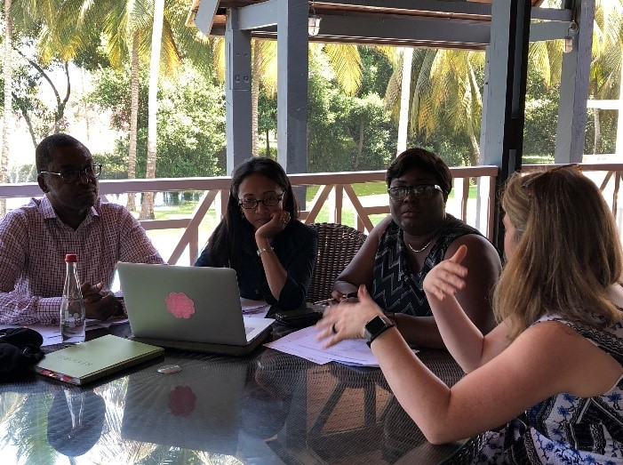

Project: USAID ACCELERATE Project – THINK | BIG (Behavior Integration Guidance)
Primary Audience: USAID Global Health Program Officers
In September 2018, I participated in the USAID Think | BIG (Behavior Integration Guidance) Regional Training in Accra, Ghana. One of my main responsibilities was to observe and user test the set of web-based tools our team has been developing to support USAID program officers in priority Missions around the world systematically integrate behavior change thinking into their health portfolios with the goal of reducing the number of mothers and children dying from preventable causes of death, such as malaria, diarrhea, pneumonia, newborn illness, etc.

Background:
Below is a brief overview of each of the Think | BIG tools: (1) Prioritizing Behaviors; (2) Analyzing Behaviors and Creating Behavior Profile s (3) Summarizing and Synthesizing Behaviors.
1. Establishing a List of Priority Behaviors: This tool helps USAID Missions prioritize a set of 6-8 life-saving behaviors that are appropriate for their country’s context. The behaviors should be tied to the USAID Mission’s development objective, their overarching health goal and be identified as most proximal to addressing the causes of mortality. The Prioritization tool helps USAID staff examine the causes of mortality and how they are related to behaviors. It also guides them to consider organizational issues, stakeholder concerns, funding streams, etc.
2. Analyzing each Priority Behavior by developing a Behavior Profile:
With a list of priority behaviors, USAID Missions can now analyze each behavior by selecting critical factors, both motivators and barriers, that help or hinder the adoption of the behavior. Then they identify the people needed to address those factors and finally they formulate program strategies that can help overcome or leverage the factors. This analysis facilitates a paradigm shift for many USAID Missions who often take an intervention-based approach to changing outcomes. They are now using a human-centered approach that looks at the realities of what influences people’s choices to make healthy and often live-saving decisions. The pathway to the behavior-centered program strategies flow back to addressing the causes of mortality and ultimately the Missions larger development objectives.
3. Summarizing and Synthesizing Behavior Profiles: The last and most complicated tool, helps USAID Missions summarize the set of behaviors by looking at commonalities across factors, supporting actors and strategies. USAID Missions can use the tool to bundle behaviors into categories that could maximize their resources and help coordinate implementing partners working across their portfolio. Bundles may include, “Home-based Healthy Practices,” or “Facility-based Healthy Practices,” or “Utilization of Routine Services.” In most scenarios, 8 Behavior Profiles will generate 24 -30 Factors, Supporting Actors and Strategies. Therefore, once it is organized in a bundle, the tool uses a machine learning algorithm to categorize each factor, supporting actor and strategy across the profiles and by bundle. USAID Program officers can then examine each bundle with factors grouped by the tool and rewrite the categories that align with a results framework. They can also look at these across bundles.
In this case study, we will look at the development and revamping of the Behavioral Summary tool based on lessons I learned in the field.
The Behavior Summary Tool Testing and Redesign:
The design of the Behavioral Summary tool was initially conceived and socialized using Google Docs with remote teams based in London, Singapore and DC. The prototype was handed our team at Sonjara to implement along with the other tools. Once coded, it was pushed out as part of the toolset.
During the regional training in Ghana, the session on summarizing and synthesizing behaviors did not go well. The testing and observations uncovered some major flaws in usability which many on the team perceived as flaws in logic or general utility of the tool. “Nobody gets it.” “It is too complicated for this audience.” “Is it even appropriate for our core audience, USAID Mission staff?” Clearly, we needed to take step back.